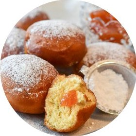
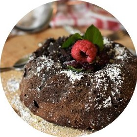
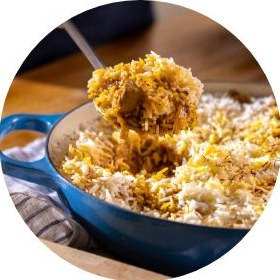

Caterers
68 caterers · 60 published · sorted by last change
- Pelau HousePublished
- Island PotPublished
- Breadfruit & ButterPending review
- Auntie Bev’s KitchenPending review
- Flying Fish KitchenPublished
- Hibiscus HutSuspended
- Tamarind TreeChanges requested
- Callaloo CornerDraft
- Maracas BayPublished

Sugar DumplinPublished- Doubles DuoDraft
- Ti KayPublished
- Rum Shop CateringRemoved
- Demerara KitchenPublished
- Cou-CouPublished
- Plantain PlateDraft
- Sorrel & SpicePublished
- Scotch Bonnet SocialPublished

Black Cake Co.Published
Sunday PotPublished